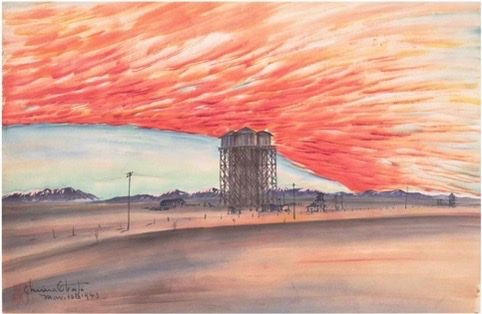

Obata remained faithful to this view even during World War II, when he and 110,000 other Japanese Americans were imprisoned in internment camps. In Topaz, Utah, Obata founded an art school and created works in which “Great Nature” transcended the physically and psychologically trying conditions of camp life. After the War, he and his wife conducted cultural tours of Japan, hoping to promote cross-cultural understanding by introducing Americans to Japanese art, architecture, and landscape gardening.For Obata, “Great Nature” provided important philosophical lessons regarding permanence and impermanence, and also served as a source of spiritual enlightenment. Although he never practiced any organized religion, Obata observed, “when I enter into the bosom of Great Nature I believe in the blessing of nature as a kind of God to me.”

“Sunset, Watertower, March 10, 1943,” 1943. Ink, color, and mica on paper, 15 1/4 x 20 1/2 in. (38.7 x 52.1 cm). Fine Arts Museums of San Francisco, Museum purchase, Gift of the Achenbach Graphic